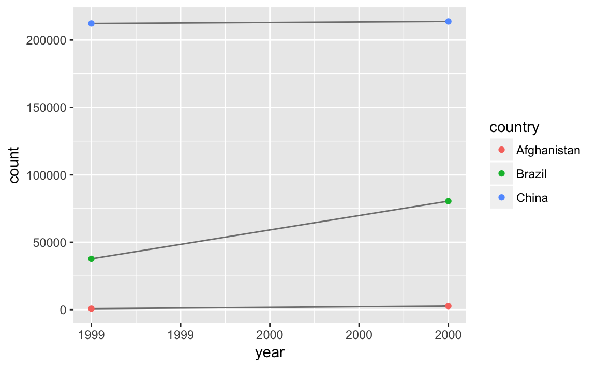
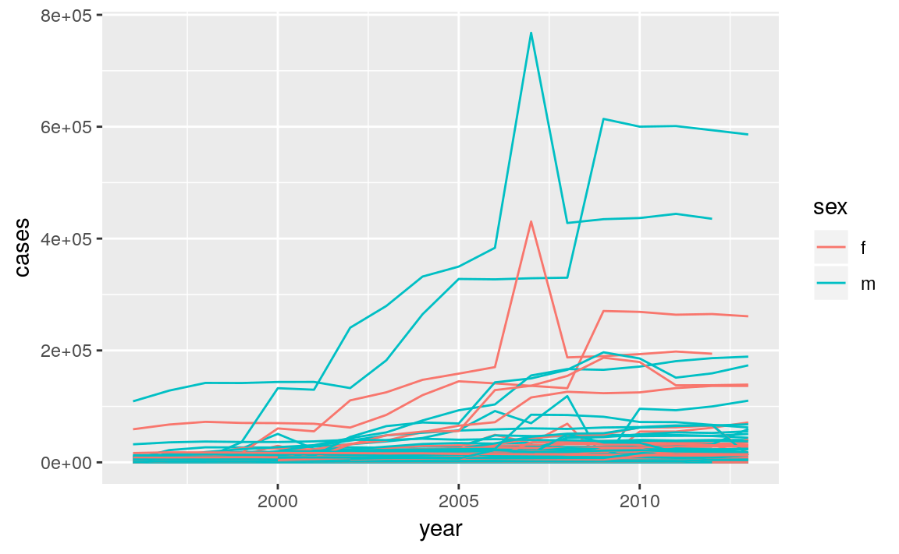

12 Tidy Data
12.1 Introduction
12.2 Tidy data
Exercise 12.2.1
Using prose, describe how the variables and observations are organized in each of the sample tables.
In table1 each row is a (country, year) with variables cases and population.
table1
#> # A tibble: 6 x 4
#> country year cases population
#> <chr> <int> <int> <int>
#> 1 Afghanistan 1999 745 19987071
#> 2 Afghanistan 2000 2666 20595360
#> 3 Brazil 1999 37737 172006362
#> 4 Brazil 2000 80488 174504898
#> 5 China 1999 212258 1272915272
#> 6 China 2000 213766 1280428583In table2, each row is country, year , variable (“cases”, “population”) combination, and there is a count variable with the numeric value of the variable.
table2
#> # A tibble: 12 x 4
#> country year type count
#> <chr> <int> <chr> <int>
#> 1 Afghanistan 1999 cases 745
#> 2 Afghanistan 1999 population 19987071
#> 3 Afghanistan 2000 cases 2666
#> 4 Afghanistan 2000 population 20595360
#> 5 Brazil 1999 cases 37737
#> 6 Brazil 1999 population 172006362
#> # ... with 6 more rowsIn table3, each row is a (country, year) combination with the column rate having the rate of cases to population as a character string in the format "cases/rate".
table3
#> # A tibble: 6 x 3
#> country year rate
#> * <chr> <int> <chr>
#> 1 Afghanistan 1999 745/19987071
#> 2 Afghanistan 2000 2666/20595360
#> 3 Brazil 1999 37737/172006362
#> 4 Brazil 2000 80488/174504898
#> 5 China 1999 212258/1272915272
#> 6 China 2000 213766/1280428583Table 4 is split into two tables, one table for each variable: table4a is the table for cases, while table4b is the table for population. Within each table, each row is a country, each column is a year, and the cells are the value of the variable for the table.
Exercise 12.2.2
Compute the rate for table2, and table4a + table4b. You will need to perform four operations:
- Extract the number of TB cases per country per year.
- Extract the matching population per country per year.
- Divide cases by population, and multiply by 10000.
- Store back in the appropriate place.
Which representation is easiest to work with? Which is hardest? Why?
In order to calculate cases per person, we need to divide cases by population for each country, year. This is easiest if country and population are two columns in a data frame with country and year rows.
For Table 2, we need to first create separate tables for cases and population and ensure that they are sorted in the same order.
t2_cases <- filter(table2, type == "cases") %>%
rename(cases = count) %>%
arrange(country, year)
t2_population <- filter(table2, type == "population") %>%
rename(population = count) %>%
arrange(country, year)Calculate the cases per capita in a separate data frame.
t2_cases_per_cap <- t2_cases %>%
mutate(population = t2_population$population,
cases_per_cap = (cases / population) * 10000) %>%
select(country, year, cases_per_cap)Since the question asks us to store it back in the appropriate location, we will add new rows with
type = "cases_per_cap" to table2 and then
sort by country, year, and variable type as in the original table.
t2_cases_per_cap <- t2_cases_per_cap %>%
mutate(type = "cases_per_cap") %>%
rename(count = cases_per_cap)bind_rows(table2, t2_cases_per_cap) %>%
arrange(country, year, type, count)
#> # A tibble: 18 x 4
#> country year type count
#> <chr> <int> <chr> <dbl>
#> 1 Afghanistan 1999 cases 745
#> 2 Afghanistan 1999 cases_per_cap 0.373
#> 3 Afghanistan 1999 population 19987071
#> 4 Afghanistan 2000 cases 2666
#> 5 Afghanistan 2000 cases_per_cap 1.29
#> 6 Afghanistan 2000 population 20595360
#> # ... with 12 more rowsNote that after adding the cases_per_cap rows,
the type of count is coerced to numeric (double) because cases_per_cap is not an integer.
For table4a and table4b, we will create a separate table for cases per capita (table4c), with country rows and year columns.
table4c <-
tibble(country = table4a$country,
`1999` = table4a[["1999"]] / table4b[["1999"]] * 10000,
`2000` = table4a[["2000"]] / table4b[["2000"]] * 10000)
table4c
#> # A tibble: 3 x 3
#> country `1999` `2000`
#> <chr> <dbl> <dbl>
#> 1 Afghanistan 0.373 1.29
#> 2 Brazil 2.19 4.61
#> 3 China 1.67 1.67Neither table is particularly easy to work with.
Since table2 has separate rows for cases and population we needed to generate a table with columns for cases and population where we could
calculate cases per capita.
table4a and table4b split the cases and population variables into different tables which
made it easy to divide cases by population.
However, we had to repeat this calculation for each row.
The ideal format of a data frame to answer this question is one with columns country, year, cases, and population.
Then problem could be answered with a single mutate() call.
Exercise 12.2.3
Recreate the plot showing change in cases over time using table2 instead of table1. What do you need to do first?
Before creating the plot with change in cases over time, we need to filter the data frame to only include rows representing cases of TB.
table2 %>%
filter(type == "cases") %>%
ggplot(aes(year, count)) +
geom_line(aes(group = country), colour = "grey50") +
geom_point(aes(colour = country)) +
scale_x_continuous(breaks = unique(table2$year)) +
ylab("cases")
12.3 Spreading and Gathering
This code is reproduced from the chapter because it is needed by the exercises:
tidy4a <- table4a %>%
gather(`1999`, `2000`, key = "year", value = "cases")
tidy4b <- table4b %>%
gather(`1999`, `2000`, key = "year", value = "cases")Exercise 12.3.1
Why are gather() and spread() not perfectly symmetrical?
Carefully consider the following example:
stocks <- tibble(
year = c(2015, 2015, 2016, 2016),
half = c( 1, 2, 1, 2),
return = c(1.88, 0.59, 0.92, 0.17)
)
stocks %>%
spread(year, return) %>%
gather("year", "return", `2015`:`2016`)
#> # A tibble: 4 x 3
#> half year return
#> <dbl> <chr> <dbl>
#> 1 1 2015 1.88
#> 2 2 2015 0.59
#> 3 1 2016 0.92
#> 4 2 2016 0.17The functions spread() and gather() are not perfectly symmetrical because column type information is not transferred between them.
In the original table the column year was numeric, but after running spread() and gather() it is a character vector.
This is because variable names are always converted to a character vector by gather().
The convert argument tries to convert character vectors to the appropriate type.
In the background this uses the type.convert() function.
Exercise 12.3.2
Why does this code fail?
table4a %>%
gather(1999, 2000, key = "year", value = "cases")
#> Error in inds_combine(.vars, ind_list): Position must be between 0 and nThe code fails because the column names 1999 and 2000 are not standard and thus needs to be quoted.
The tidyverse functions will interpret 1999 and 2000 without quotes as looking for the 1999th and 2000th column of the data frame.
This will work:
Exercise 12.3.3
Why does spreading this tibble fail? How could you add a new column to fix the problem?
people <- tribble(
~name, ~key, ~value,
#-----------------|--------|------
"Phillip Woods", "age", 45,
"Phillip Woods", "height", 186,
"Phillip Woods", "age", 50,
"Jessica Cordero", "age", 37,
"Jessica Cordero", "height", 156
)
glimpse(people)
#> Observations: 5
#> Variables: 3
#> $ name <chr> "Phillip Woods", "Phillip Woods", "Phillip Woods", "Jess...
#> $ key <chr> "age", "height", "age", "age", "height"
#> $ value <dbl> 45, 186, 50, 37, 156Spreading the data frame fails because there are two rows with “age” for “Phillip Woods”. We would need to add another column with an indicator for the number observation it is,
people <- tribble(
~name, ~key, ~value, ~obs,
#-----------------|--------|------|------
"Phillip Woods", "age", 45, 1,
"Phillip Woods", "height", 186, 1,
"Phillip Woods", "age", 50, 2,
"Jessica Cordero", "age", 37, 1,
"Jessica Cordero", "height", 156, 1
)
spread(people, key, value)
#> # A tibble: 3 x 4
#> name obs age height
#> <chr> <dbl> <dbl> <dbl>
#> 1 Jessica Cordero 1 37 156
#> 2 Phillip Woods 1 45 186
#> 3 Phillip Woods 2 50 NAExercise 12.3.4
Tidy the simple tibble below. Do you need to spread or gather it? What are the variables?
You need to gather it. The variables are:
- pregnant: logical (“yes”, “no”)
- female: logical
- count: integer
gather(preg, sex, count, male, female) %>%
mutate(pregnant = pregnant == "yes",
female = sex == "female") %>%
select(-sex)
#> # A tibble: 4 x 3
#> pregnant count female
#> <lgl> <dbl> <lgl>
#> 1 TRUE NA FALSE
#> 2 FALSE 20 FALSE
#> 3 TRUE 10 TRUE
#> 4 FALSE 12 TRUEConverting pregnant and female from character vectors to logical was not necessary to tidy it, but it makes it easier to work with.
12.4 Separating and Uniting
Exercise 12.4.1
What do the extra and fill arguments do in separate()? Experiment with the various options for the following two toy datasets.
tibble(x = c("a,b,c", "d,e,f,g", "h,i,j")) %>%
separate(x, c("one", "two", "three"))
#> Warning: Expected 3 pieces. Additional pieces discarded in 1 rows [2].
#> # A tibble: 3 x 3
#> one two three
#> <chr> <chr> <chr>
#> 1 a b c
#> 2 d e f
#> 3 h i j
tibble(x = c("a,b,c", "d,e", "f,g,i")) %>%
separate(x, c("one", "two", "three"))
#> Warning: Expected 3 pieces. Missing pieces filled with `NA` in 1 rows [2].
#> # A tibble: 3 x 3
#> one two three
#> <chr> <chr> <chr>
#> 1 a b c
#> 2 d e <NA>
#> 3 f g iThe extra argument tells separate() what to do if there are too many pieces,
and the fill argument if there aren’t enough.
tibble(x = c("a,b,c", "d,e,f,g", "h,i,j")) %>%
separate(x, c("one", "two", "three"))
#> Warning: Expected 3 pieces. Additional pieces discarded in 1 rows [2].
#> # A tibble: 3 x 3
#> one two three
#> <chr> <chr> <chr>
#> 1 a b c
#> 2 d e f
#> 3 h i jBy default, separate() drops the extra values with a warning.
tibble(x = c("a,b,c", "d,e,f,g", "h,i,j")) %>%
separate(x, c("one", "two", "three"), extra = "drop")
#> # A tibble: 3 x 3
#> one two three
#> <chr> <chr> <chr>
#> 1 a b c
#> 2 d e f
#> 3 h i jThis produces the same result as above, dropping extra values, but without the warning.
tibble(x = c("a,b,c", "d,e,f,g", "h,i,j")) %>%
separate(x, c("one", "two", "three"), extra = "merge")
#> # A tibble: 3 x 3
#> one two three
#> <chr> <chr> <chr>
#> 1 a b c
#> 2 d e f,g
#> 3 h i jIn this, the extra values are not split, so "f,g" appears in column three.
In this, one of the entries for column, "d,e", has too few elements.
The default for fill is similar to those in separate separate(); it fills with missing values but emits a warning. In this, row 2 of column “three”, is NA.
tibble(x = c("a,b,c", "d,e", "f,g,i")) %>%
separate(x, c("one", "two", "three"))
#> Warning: Expected 3 pieces. Missing pieces filled with `NA` in 1 rows [2].
#> # A tibble: 3 x 3
#> one two three
#> <chr> <chr> <chr>
#> 1 a b c
#> 2 d e <NA>
#> 3 f g iAlternative options for fill are "right", to fill with missing values from the right, but without a warning
tibble(x = c("a,b,c", "d,e", "f,g,i")) %>%
separate(x, c("one", "two", "three"), fill = "right")
#> # A tibble: 3 x 3
#> one two three
#> <chr> <chr> <chr>
#> 1 a b c
#> 2 d e <NA>
#> 3 f g iThe option fill = "left" also fills with missing values without a warning, but this time from the left side.
Now, column “one” of row 2 will be missing, and the other values in that row are shifted over.
Exercise 12.4.2
Both unite() and separate() have a remove argument. What does it do? Why would you set it to FALSE?
You would set it to FALSE if you want to create a new variable, but keep the old one.
Exercise 12.4.3
Compare and contrast separate() and extract(), Why are there three variations of separation (by position, by separator, and with groups), but only one unite?
The function separate(), splits columns a column into multiple groups using
by separator, if the sep argument is a character vector, or character positions, if sep is numeric.
# example with separators
tibble(x = c("X_1", "X_2", "AA_1", "AA_2")) %>%
separate(x, c("variable", "into"), sep = "_")
#> # A tibble: 4 x 2
#> variable into
#> <chr> <chr>
#> 1 X 1
#> 2 X 2
#> 3 AA 1
#> 4 AA 2
# example with position
tibble(x = c("X1", "X2", "Y1", "Y2")) %>%
separate(x, c("variable", "into"), sep = c(1))
#> # A tibble: 4 x 2
#> variable into
#> <chr> <chr>
#> 1 X 1
#> 2 X 2
#> 3 Y 1
#> 4 Y 2The function extract() uses a regular expression to specify groups in character vector and split that single character vector into multiple columns.
This is more flexible than separate() because it does not require a common
separator or specific column positions.
# example with separators
tibble(x = c("X_1", "X_2", "AA_1", "AA_2")) %>%
extract(x, c("variable", "id"), regex = "([A-Z])_([0-9])")
#> # A tibble: 4 x 2
#> variable id
#> <chr> <chr>
#> 1 X 1
#> 2 X 2
#> 3 A 1
#> 4 A 2
# example with position
tibble(x = c("X1", "X2", "Y1", "Y2")) %>%
extract(x, c("variable", "id"), regex = "([A-Z])([0-9])")
#> # A tibble: 4 x 2
#> variable id
#> <chr> <chr>
#> 1 X 1
#> 2 X 2
#> 3 Y 1
#> 4 Y 2
# example that separate could not parse
tibble(x = c("X1", "X20", "AA11", "AA2")) %>%
extract(x, c("variable", "id"), regex = "([A-Z]+)([0-9]+)")
#> # A tibble: 4 x 2
#> variable id
#> <chr> <chr>
#> 1 X 1
#> 2 X 20
#> 3 AA 11
#> 4 AA 2Both separate() and extract() convert a single column to many columns.
However, unite() converts many columns to one, with a choice of a separator to include between column values.
tibble(variable = c("X", "X", "Y", "Y"), id = c(1, 2, 1, 2)) %>%
unite(x, variable, id, sep = "_")
#> # A tibble: 4 x 1
#> x
#> <chr>
#> 1 X_1
#> 2 X_2
#> 3 Y_1
#> 4 Y_2In other words, with extract() and separate() only one column can be chosen,
but there are many choices how to split that single column into different columns.
With unite(), there are many choices as to which columns to include, but only
choice as to how to combine their contents into a single vector.
12.5 Missing Values
Exercise 12.5.1
Compare and contrast the fill arguments to spread() and complete().
In spread(), the fill argument explicitly sets the value to replace NAs.
In complete(), the fill argument also sets a value to replace NAs but it is named list, allowing for different values for different variables.
Also, both cases replace both implicit and explicit missing values.
Exercise 12.5.2
What does the direction argument to fill() do?
With fill, it determines whether NA values should be replaced by the previous non-missing value ("down") or the next non-missing value ("up").
12.6 Case Study
This code is repeated from the chapter because it is needed by the exercises.
who1 <- who %>%
gather(new_sp_m014:newrel_f65, key = "key", value = "cases", na.rm = TRUE)
glimpse(who1)
#> Observations: 76,046
#> Variables: 6
#> $ country <chr> "Afghanistan", "Afghanistan", "Afghanistan", "Afghanis...
#> $ iso2 <chr> "AF", "AF", "AF", "AF", "AF", "AF", "AF", "AF", "AF", ...
#> $ iso3 <chr> "AFG", "AFG", "AFG", "AFG", "AFG", "AFG", "AFG", "AFG"...
#> $ year <int> 1997, 1998, 1999, 2000, 2001, 2002, 2003, 2004, 2005, ...
#> $ key <chr> "new_sp_m014", "new_sp_m014", "new_sp_m014", "new_sp_m...
#> $ cases <int> 0, 30, 8, 52, 129, 90, 127, 139, 151, 193, 186, 187, 2...who3 <- who2 %>%
separate(key, c("new", "type", "sexage"), sep = "_")
who3
#> # A tibble: 76,046 x 8
#> country iso2 iso3 year new type sexage cases
#> <chr> <chr> <chr> <int> <chr> <chr> <chr> <int>
#> 1 Afghanistan AF AFG 1997 new sp m014 0
#> 2 Afghanistan AF AFG 1998 new sp m014 30
#> 3 Afghanistan AF AFG 1999 new sp m014 8
#> 4 Afghanistan AF AFG 2000 new sp m014 52
#> 5 Afghanistan AF AFG 2001 new sp m014 129
#> 6 Afghanistan AF AFG 2002 new sp m014 90
#> # ... with 7.604e+04 more rowswho5 <- who4 %>%
separate(sexage, c("sex", "age"), sep = 1)
who5
#> # A tibble: 76,046 x 6
#> country year type sex age cases
#> <chr> <int> <chr> <chr> <chr> <int>
#> 1 Afghanistan 1997 sp m 014 0
#> 2 Afghanistan 1998 sp m 014 30
#> 3 Afghanistan 1999 sp m 014 8
#> 4 Afghanistan 2000 sp m 014 52
#> 5 Afghanistan 2001 sp m 014 129
#> 6 Afghanistan 2002 sp m 014 90
#> # ... with 7.604e+04 more rowsExercise 12.6.1
In this case study I set na.rm = TRUE just to make it easier to check that we had the correct values. Is this reasonable? Think about how missing values are represented in this dataset. Are there implicit missing values? What’s the difference between an NA and zero?
Perhaps? I would need to know more about the data generation process. There are zero’s in the data, which means they may explicitly be indicating no cases.
So it appears that either a country has all its values in a year as non-missing if the WHO collected data for that country, or all its values are non-missing. So it is okay to treat explicitly and implicitly missing values the same, and we don’t lose any information by dropping them.
gather(who, new_sp_m014:newrel_f65, key = "key", value = "cases") %>%
group_by(country, year) %>%
mutate(missing = is.na(cases)) %>%
select(country, year, missing) %>%
distinct() %>%
group_by(country, year) %>%
filter(n() > 1)
#> # A tibble: 6,968 x 3
#> # Groups: country, year [3,484]
#> country year missing
#> <chr> <int> <lgl>
#> 1 Afghanistan 1997 FALSE
#> 2 Afghanistan 1998 FALSE
#> 3 Afghanistan 1999 FALSE
#> 4 Afghanistan 2000 FALSE
#> 5 Afghanistan 2001 FALSE
#> 6 Afghanistan 2002 FALSE
#> # ... with 6,962 more rowsExercise 12.6.2
What happens if you neglect the mutate() step? (mutate(key = stringr::str_replace(key, "newrel", "new_rel"))
The separate() function emits the warning “too few values”.
If we check the rows for keys beginning with "newrel_", we see that sexage is messing,
and type = m014.
who3a <- who1 %>%
separate(key, c("new", "type", "sexage"), sep = "_")
#> Warning: Expected 3 pieces. Missing pieces filled with `NA` in 2580 rows
#> [73467, 73468, 73469, 73470, 73471, 73472, 73473, 73474, 73475, 73476,
#> 73477, 73478, 73479, 73480, 73481, 73482, 73483, 73484, 73485, 73486, ...].
filter(who3a, new == "newrel") %>% head()
#> # A tibble: 6 x 8
#> country iso2 iso3 year new type sexage cases
#> <chr> <chr> <chr> <int> <chr> <chr> <chr> <int>
#> 1 Afghanistan AF AFG 2013 newrel m014 <NA> 1705
#> 2 Albania AL ALB 2013 newrel m014 <NA> 14
#> 3 Algeria DZ DZA 2013 newrel m014 <NA> 25
#> 4 Andorra AD AND 2013 newrel m014 <NA> 0
#> 5 Angola AO AGO 2013 newrel m014 <NA> 486
#> 6 Anguilla AI AIA 2013 newrel m014 <NA> 0Exercise 12.6.3
I claimed that iso2 and iso3 were redundant with country. Confirm this claim.
Exercise 12.6.4
For each country, year, and sex compute the total number of cases of TB. Make an informative visualization of the data.
who5 %>%
group_by(country, year, sex) %>%
filter(year > 1995) %>%
summarise(cases = sum(cases)) %>%
unite(country_sex, country, sex, remove = FALSE) %>%
ggplot(aes(x = year, y = cases, group = country_sex, colour = sex)) +
geom_line()
A small multiples plot faceting by country is difficult given the number of countries. Focusing on those countries with the largest changes or absolute magnitudes after providing the context above is another option.
12.7 Non-Tidy Data
No exercises